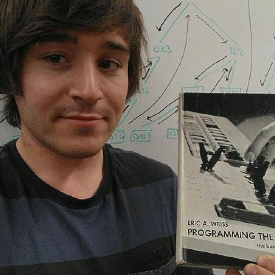

Hello world!
I’m a soon-to-be graduate with a B.S in Computer Science and a minor in Cybersecurity. While I don’t have much relevant professional experience outside of a few freelance gigs, I am always eager to learn something new or improve my existing skills. Linked is my GitHub, which includes projects I’ve done within school and in free time as proof.
When I was maybe 13, I read a book ‘But How Do It Know’ by J. Clark Scott. Little did I know, this would lead to an R4DS, jailbroken phones, and, in general, a lifelong fascination with computers, particularly using them to solve problems in unconventional ways. Outside of that, you can find me at a jiu-jitsu dojo, or on the trails in the PNW.
Thanks for stopping by